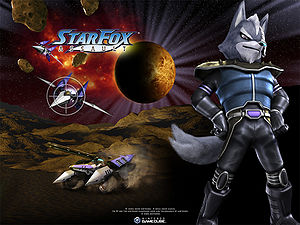
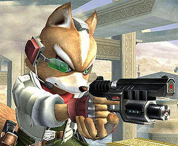

Star Fox
 De: La Frikipedia, la enciclopedia extremadamente seria.
De: La Frikipedia, la enciclopedia extremadamente seria.
De la serie Videojuegos:
Star Fox

| Desarrollado por:
|
Noentiendo
|
| Distribuido por:
|
Noentiendo y Satoru Iwata
|
| Diseñado por:
|
El Chip SF sin ayuda de Satoru Iwata
|
| Motor
|
El de un arwing, menor al de la Great Lancha, pero mayor al de una roca.
|
| Género(s)
|
Star Wars Futuristiano.
|
| Fecha de lanzamiento:
|
Un 50% cancelados, mucho antes de que tu nacieras, pero despues de Cyberjesus
|
| Modos de juego:
|
Para 1 a 19263892 jugadores. Usando la Imaginación
|
| Requisitos:
|
Tener una consola de Noentiendo o dos, tal vez más, pero nunca mas que 17.
|
| Disponible en:
|
Base del Cutis
|
| Formatos:
|
Zorro, con cutis perfecto, con piernas roboticas, un casco, casi metrosexual, ¿algo más?
|
| Edades:
|
Para los grandes, para los pequeños, para los que no se callan, para los furry fans, para los vegetarianos, para los frikis, para los pobres...
|
| Puntuaciones:
|
Muy arriba si no fuera por el Mario
|
Trata sobre tener el cutis perfecto y destruir todas las naves enemigas que puedas.
Siempre hay malos, siempre hay buenos, pero en el caso de Star Fox, siempre hay cutis. Esta no es mas que otra copia mas de Estar Tric y Estar Guars. Noentiendo quería algo nuevo, solo que ellos pensaban que, por algo nuevo, debia ser una copia.
El juego
 Esterm... si, repito: yo soy Photz, y si, este es mi equipo...
Star Fox cuenta la historia de un zorro parlante que obtuvo el premio al perfecto cutis, (se nota que Andolf, un mono que quiere obtener el cutis perfecto, pero para lograrlo debe destruir a Fox (Zorro Parlante), y de paso el universo, pero nuestro odiado, marginado, in-inteligente amado amigo, el zorro parlante, intentara de perderlo puesto que el muy ególatra quiere ser premio al cutis perfecto por siempre el es muy pacifico y solo quiere la paz.
A través de todos los videojuegos se ha demostrando poco a poco como Fox va mejorando en cuanto a peinado y cutis, logrando una piel perfecta entre los sucesos ocurridos en el Noentiendo DS.
El origen del nombre
Dado que Photz es egocéntrico y Mamon Evenflo decidió después de una enorme lluvia de ideas, y 3 idas al baño que el nombre de su equipo sería: "El mega glorioso equipo de Fox McCloud, amigos y una rana de dudosa pocedenciaaaaa", pero para resumir solo se le llamo "Star Fox Team de super poderes al ataque" pero por desgracia el nombre completo, y el resumido tampoco, logro entrar en el no tan grande timón del Great Fox (otra prueba de su egocentrismo) así que se quedo como Star Fox o simplemente SF.
Por cierto, las arwings originalmente iban a ser: Not so great than the Great fox, but almost Flyable fox.
Sistema Lylat
El único sistema solar con nombre de leche condensada. El mágico e imaginario lugar localizado entre la estrella de la muerte, y tu planeta en oGame donde se realizan concursos de cutis cada 2 por 3, los cuales están trucados, como los reyes magos siempre gana Photz (Zorro Parlante).
Este sistema en especial, tiene al ejercito mas grande que puedas ver, y misteriosamente, solo 5 naves lo pueden salvar.
Como ya debes de imaginar, siempre esta en peligro, si no nuestros "héroes" no vivirían ahí. Hasta pareciera ser misteriosamente, que los accidentes o crimenes pasan siempre con ellos cerca.
Los protagonistas
Los buenos
 Nuestro querido zorro parlante con su mira láser de juguete
Te maldigo Satoru. ¡¡¡Yo pedí un brawl que demuestre mi individualidad, y me das esto!!!, ni siquiera tengo pulgares, soy un ave, no un topo.- Falco Lombardi acerca de su brawl.
Obviamente nuestro sarnoso y garrapatoso amistoso y querido zorro parlante (líder) no podría hacerlo solo y pediría ayuda de antiguos ganadores del cutis perfecto.
- Pepino Vale: (observador, no de batallas, sino de telenovelas) El más antiguo de los ganadores. Gano el premio del cutis perfecto el año 100.000.000 AC. Se la pasa desde la Great Navesota viendo Telenovelas, todo el día, desde su retiro hasta le fecha, con Guarrobot, el cual no tiene nariz.
- Falcon Bombardi: (mejor piloto, no era suficiente solo con piloto, su ego es demasiado para un rango cualquiera, aparte que no hay otros pilotos, como para compararlo) Un halcón que se cree el mas chachi pistachi pero
no es ni media ostia de lo que es solo que gano el 2° lugar, después de nuestro odiado querido zorro parlante. Desde su primer momento de vida ha tratado de apoderarse del Star Fox team, pero sus planes son frustrados por un grupo de adolescentes y su Zorro Parlante. Nunca se le ha permitido manejar el Great Fox, desde el penoso incidente en el cuál destruyo el Sistema Carnag (ven, nadie sabe de el).
- Pipi Load: (mecánico) Un sapo que nunca ha ganado nada, pero el zorro parlante tiene piedad de él. Si jugaste Assault comprenderás por qué no aparece igual en el de DS. El de la versión de DS es un clon que no tiene permitido decir la frase no mercy, y tampoco puede juntar esas letras en una misma oración, aparte de que no puede usar los telecomunicadores. Ventajas de la manipulación genética.
- Crystal: (telépata, ¿qué clase de rango es ese?) Es una zorra color azul, muy raro porque todo el mundo sabe que las zorras son color magenta, tiene una crema para tener el cutis perfecto, razón por la cual nuestro querido zorro parlante está tras de ella. Y también porque la ama. Como buena zorra, traicionó al equipo varias veces para liarse con Panther Karoso. Si no acabas bien el juego de DS se queda en el Star Wolf Team, si lo acabas bien tiene un hijo con
Wolf Photz o cualquier mierda.
- Rob 64: (robot, otro rango bien pensado, verdadero rango: máquina expendedora) Tiene traumas desde su infancia, cuando era
útil un electrodoméstico. Por nunca haber tenido nariz ahora es un robot retirado y sarcástico, que se la pasa en la Great Lancha todo el día por su falta de piernas otro trauma viendo novelas con peppy.
- Fontanero: Este es uno de los bueno (sobretodos en Noentiendo) es el fontanero que todos conocen, Fox McCloud y el tiene el mismo enemigo erizo que corre y que es como fox, un animal humanizado.
- Espadachin: Otro igual a la Noentiendo, también ayuda a Fox McCloud y a Fontanero a acabar con el erizo de SAGA.
- Monstruos de bola: Este es también de Noentiendo, los monstruos esos de Ash Ketchum.
- Abogado: Este coseguio que el erizo azul no demandara a Fox McCloud y a Noentiendo por plagio.
Los malos
Pero esta labor se volverá difícil puesto que Andolf y sus secuaces, últimos lugares de los concursos ya mencionados.
- Andolf: El malo de la serie, nunca ha ganado nada, y siente envidia del zorro parlante que siempre gana todos los concursos.
- Wolfo: Este se cree el todopoderoso, y cree que su cutis es el mejor, pero por creerse termino
con la patada giratoria de Chuck Norris destruido por Zorro Parlante.
- Erizo: No es un villano de este juego, pero es considerado como tal. Sobre todo por los de Noentiendo, odiado por Fontanero y Fox McCloud .
Los feos
Bueno, no debería haber feos, ¿no? Esto trata sobre un maldito zorro parlante que tiene el cutis perfecto y viaja por el espacio expandiendo sus productos de belleza.
Lo necesario
Si en este juego quieres aparecer, apellido irlandés deberéis tener.
La Historia de Los Renegados Star Wolf Team
La Historia se remonta al kindergarten de wolf y Fox, donde:
La malvada pandilla del cutis perfecto formada por Fox, sus amigos, y una rana de dudosa procedencia, ignoraban a su fan #1 Wolf O'donell.
En palabras de Photz: Eres muy Naco como para entrar, aparte de Gris
y despues le hizo un doble super mega triple calzon chino a wolf, del cuál hasta la fecha aún no se recupera.a
Entonces Wolf hace: La Magnifica y super mega fabulosa pandillde los renegados, (la ","[coma] va incluida en el nombre, le da propiedad) la cual dice que odia a Fox por que ellos si tienen una nave nodriza, no tienen que dormir en pequeñas naves en forma de W sin baño, y no tienen que pagar la costosa renta de un depa en la zona fea de Corneria City.
La proxima semana en Famosos los aparoids, La historia detras del mito de la reina aparoid. (Hombre, Mujer o bestia) averigüenlo la proxima semana, en Historias engarzadas.
Años después se cambiaron el nombre de La Magnifica y super mega fabulosa pandillde los renegados, a los originales que tocan los copy lefts ajenos de Wolf, Star Wolf Team,(con coma otra vez) argumentando que era muy distinto el nombre, al de Star Fox Team, aparte de que el Star Fox Team tiene un nombre muy distinto al Star Wolf Team, , si lo ven unos tienen , y los otros no. el Juez dijo: fallo a favor del defendido. Y asi nació el Star Wolf Team, Esa fue la única batalla que lograron ganar frente al star fox, y eso por la presencia dl juez.
Miembros
"No hablen, ni se muevan, ¿que no ven que nos vemos cojonudos?"
- Wolf O'donell: el Lider, (jaja, que esperabas) y traumatizado lobo transgenico odiado por green peace y archirival de fox, (algo asi como Gary para Ash) (por cierto wolf nunca le gana a fox, solo le salva la esponjada cola, pero nada más) es Secretamente el fan #1 del SF pero de todos modos los odia.
Por cierto, según la gramatica, y la fonetica, esta terminantemente prohibido sacarle fotos a las personas dentro de un centro comercial escribir "wolf" con Mayusculas, si la palabra "Fox" aparece en la misma oración.
Restos de Pigma. Leer la marca. O de tu vieja
IP anónima, parece que no hay diferencia
- Pigma†:
Cenado (Finado.) (Este no es su rango, en serio, esta muerto) Muerto, ahora es un Jamon en algún Wal-mart del sistema Lylat, traiciono al Star Wolf Team para crear su propio equipo (no lo logro) y despues fue matado en el rastro por los aparoids.
- Leon Powalski: No se como me logre aprender su nombre. pero no tiene nada de especial aparte de una castrocisima voz.
- Panther Karoso (karuroso en japones, algo insinuante no?): es el sex appeal del equipo, el mas chulo, y enamorado de Vidrio del equipo, de hecho se la logra tirar, luego fox vuelve en el tiempo y lo evita con la cápsulo de DR. who, pero eso va en otro articulo. El es el suplente de Pigma (no sigma, Pigma) y el novato, nuevo o como quieran. Por su modica mensualidad de 764000 Creditos tiene derecho a una wolfen sin baño, y una membresía, los amigos son aparte; Y por solo 3982000 créditos mas al mes, se le permite ponerle tatuajes a su nave, con forma de rosa, lo que indica que se vuelve maricón despues de no lograr follarse a Vridrio.
Por cierto, es el único que paga membresia, por ser el novato, el mantiene al equipo.
Conversaciones clásicas
Slippy: No mercy.
Rob 64: Slippy callate.
Slippy: Tu no me ordenas.
Rob 64: Claro que sí Mr. fluido nasal.
Slippy: Al menos tengo Nariz.
Rob 64: Golpe bajo.
Slippy: No mercy.
Fox: Enserio Callate Slippy.
Rob 64: Si callate.
Fox: No te metas, esto ya es personal, deja que lo alcance.
Rob 64: ridiculo cuadrupedo.
Fox: Al menos tengo piernas.
Rob 64: Golpe Bajo.
wolf: Esta vez te venzo
Fox: Lo mismo haz dicho desde el kinder
wolf: en serio si te derroto.
Fox: Habla con la mano sin pulgares de F.
wolf: oye. hazme e caso.
Falco: Si tengo dedos. y si entendi esa.
wolf y Fox: Callate.
wolf: y exijo mi nombre en Bloq. Mayus.
Fox: Jajaja. Dicelo a Satoru
Naves
"hey wolf, no nos alcanzo para metal"-Leon "a que mola mas hecha con lego e Fox?"-Wolf
Para detener a Andolf, el zorro parlante, ocupara muchas naves espaciales, algunas de ellas son:
"fox, pues erhmm, a nosotros no nos quisieron dar el metal, q por que siempre lo rompemos..."-Slippy. "Ja wolf como la viste? ahora nosotros tenemos una nueva aleación suprema para el combate"-Fox
- Arwing ®: Es la nave principal, tiene la forma de una A.Incluye un asiento-robot-estilista para no despeinarse durante las batallas. Antes se transformaba en cualquier nave super pro de ataque, despues prefirieron el asiento-robot-estilista, para no despeinarse, en lugar de un buen sistema de armamento.
"exijo ese letrero fuera de nuestro espacio aereo, interrumpe la novela."- Peppy
- Great Fox ®: Es la nave nodriza, hay viven
Chuck Norris todo los del equipo del zorro parlante. Tiene un salon de bellesa donde el zorro parlante, limpia su cutis antes y despues de cada batalla. Por cierto en la versión para el DS se cambia el nombre de la nave, a el Great Emo Zepellin (q nadie vio los colores?)
- Wolfen ®:
La misma basura que las arwings, pero mas dificil de manejar, y mas poderosa, por que no contiene asiento-robot-estilista Es la nave de Wolfo. Tiene forma de W, al estar mas abajo en el abecedario, obtiene mas poder.
Lista de Juegos
Star Fox
Cruel batalla del bien contra el mal Con Gráficos de NES Todo comienza en una convencion del cutis. Andolf, un enloquecido Primate (obviamente con el cutis desgarrado) en son de guerra. Destruyo toda la convencion con una sola patada giratoria de Chuck Norris, secuestro al padre-entrenadormetrosexual de Fox y escapo. Zorro Parlante logro escapar con unos rehenes su gran equipo, e iniciar un búsqueda de sed de venganza contra el ataque de la base central de la convencion central de el cutis.
Star Fox 64
Fue el segundo de la saga, en la cual fox dejaba de parecer un geodude, para ser algo similar a un perro, pero mejor ni hablar acerca de falco y Slippy.
Este juego les gustó tanto a los productores que en vez de hacer un juego nuevo, hicieron un magnifico remake (port de mierder) llamado "Star Fox 64 3D" Aquívemos que hicieron hasta antes del remake, con un parón desde el 2006 sin hacer videojuegos
|
|
 Shooter Shooter
 Terror Terror
 Velocidad Velocidad
 Rol Rol
 Estrategia Estrategia
 Aventuras Aventuras
 Fight! Fight!
 Clásicos Clásicos
 Deportivos Deportivos
 Aventura gráfica Aventura gráfica
 Novela visual Novela visual
 Personajes de videojuegos Personajes de videojuegos
|
Autor(es):
- El Sevillano
- Link t79
- Manamaster
- Frikikingcrc3
- Veni Vidi Vici
- Dark temptation
- Mel-o
- Link
- Bladguer
- Roms.
Frikipedia 2005-2016, Licencia
GFDL 1.2 - Extraído por FrikiLeaks